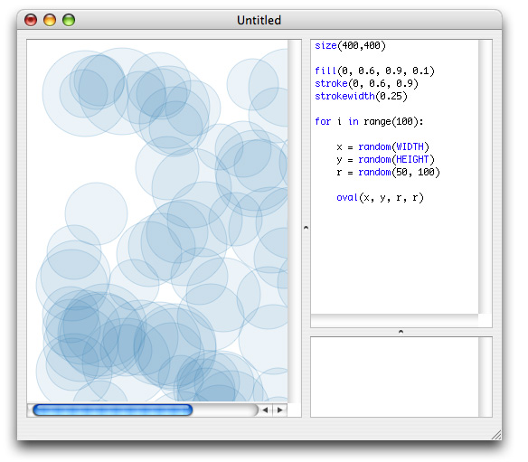

Repetition is what computers are really good at; they never grow bored, you can ask them to do the same thing over and over again and they will never stop liking it. And they’re fast at calculating too.
This is the main advantage of software such as PlotDevice, you don’t have to do everything by yourself again and again - once you get the first time right, just let the computer handle the hundred other times.
In programming terms, repetition, or doing the same thing multiple times, is generally called a for-loop. A for-loop is like a set of hands counting fingers. But an infinite number of hands, with an infinite number of fingers to count.

The statement looks like this:
for variable in list: do stuff
Don’t forget the little colon at the end of the for variable in list: statement!
The variable can have any name you like (you already knew if you read about variables). This variable holds the current count of fingers. A common name for it is i, a residue of basic math where counters are generally named i as well.
It’s short, and it’s a good convention with a long history.
The list part is a list of numbers or elements, of which each element is consecutively assigned to the variable. A for-loop doesn’t just count fingers, it can count anhything you like, anything you put inside the list: numbers, strings, colors, and so on.
So if list where [’apple’, ‘pear’, ‘banana’], the commands in the for-loop would be executed three times, with variable consecutively being apple the first time, pear the second time, and banana the third time. Now we’re counting fruit.
for i in ["apple", "pear", "banana"]: print i >>> apple >>> pear >>> banana
A common thing to put here as list is the range(n) command, which returns a list with numbers from 0 to n.
for i in range(3):
print i
>>> 0
>>> 1
>>> 2
The do stuff part are the PlotDevice commands that need to be executed repeatedly. They go indented (or tabbed) beneath the for-statement. The script is ‘trapped’ in a loop here, keeps executing the indented commands until each element from list has consecutively been assigned to variable.
The great thing is you can (of course) use the variable in each loop. Like in the example above, where we had a little loop that went through all the fruit in the list and printed out each piece of fruit. The print i is an abstract command... when PlotDevice goes through the loop i is replaced with each element in the list.
Don’t forget the little colon at the end of the for variable in list: statement!
For-loops and the random() work really well together. You can draw a hundred circles for example, and have PlotDevice place each of them at random locations. This way, each time you run the script, you get a different composition of circles.
It’s easy to program a ‘style’ with variations this way.
for i in range(100):
x = random(HEIGHT)
y = random(WIDTH)
r = random(50, 100)
oval(x, y, r, r)